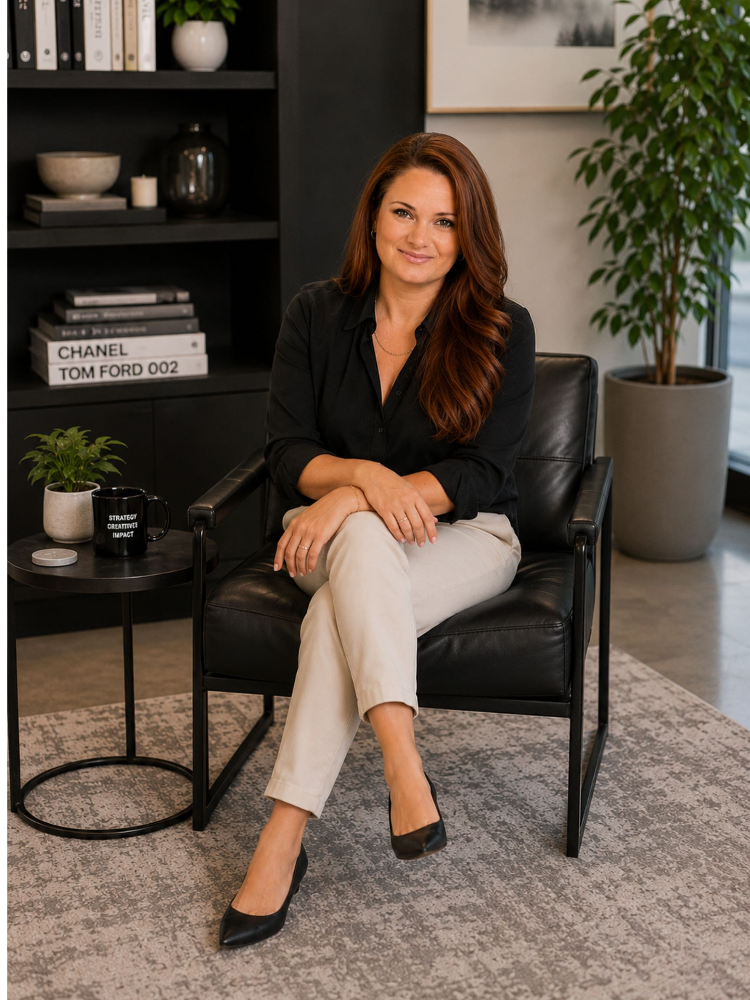

Strategic marketing leader with 10+ years building brands, launching products, and driving measurable growth across B2B manufacturing, luxury real estate, and ecommerce — from the boardroom to the campaign brief.

I'm a senior marketing leader who builds things that last — departments, systems, brands, and campaigns that continue generating results long after they launch.
My career has taken me from building the first marketing department at a national dancewear manufacturer, to leading luxury brand and PR strategy for one of the Southeast's premier real estate brokerages, to serving as Director of Marketing at Radarsign — where I built the marketing function from the ground up and led the strategic brand, product, and demand generation programs that defined the company's next chapter.
I specialize in connecting strategy to execution. I'm equally comfortable presenting a GTM roadmap to a Board of Directors and writing the email that closes the campaign. I understand data, design, content, and revenue — and I know how to make them work together.
I bring a rare combination of strategic leadership and hands-on execution across the disciplines that move marketing from cost center to growth engine.
Building brands from fragmented to focused — messaging architecture, visual identity systems, brand governance, and positioning that holds up across every customer touchpoint.
End-to-end GTM planning and execution for product launches — audience targeting, channel strategy, launch sequencing, sales enablement, and performance tracking.
Multi-channel programs that fill the funnel — PPC, email campaigns, SEO, content marketing, social media, and tradeshows, all measured and optimized by revenue contribution.
Translating complex products and ideas into compelling content — white papers, campaign messaging, press releases, editorial strategy, and long-form educational resources.
Building the infrastructure behind the strategy — KPI dashboards, attribution systems, campaign operations frameworks, CRM integration, and reporting that drives decisions.
Earned media strategy, press release development, editorial partnerships, executive visibility, and integrated communications that strengthen brand authority and perception.
Served as the founding Director of Marketing for a nationwide traffic safety manufacturer, building the department, systems, strategy, and brand infrastructure from scratch. Led all facets of marketing including brand strategy, product launches, GTM campaigns, digital marketing, content, PR, email, social media, and cross-functional leadership — while influencing 85% of organization-wide lead generation.
Led marketing strategy, luxury brand management, PR, and organizational communications for one of the Southeast's premier real estate brokerages — supporting more than 1,000 agents across 17 offices with integrated campaigns, agent enablement, recruitment marketing, and executive visibility programs.
Built and led the first dedicated marketing department for a national dancewear manufacturer, transforming marketing into a core growth function. Directed customer acquisition and brand initiatives supporting 1,000+ retail stores nationwide and 100+ international distribution partners across B2B wholesale and B2C ecommerce.
A selection of campaigns, launches, and strategic initiatives that illustrate how I approach marketing — with equal weight on the strategy behind the work and the results it produced.
Radarsign was entering the RRFB (Rectangular Rapid Flashing Beacon) market with a genuinely differentiated product — the first RRFB to integrate radar-based traffic data directly at the crosswalk. The challenge was positioning it not as a feature upgrade, but as a new product category: intelligence at the crossing, not just a flashing light.
I led the complete GTM strategy including internal launch brief, product positioning ("Traditional RRFBs flash. CrossCommand measures what drivers actually do when pedestrians cross."), naming strategy for the full Command Ecosystem product platform, PPC campaign architecture, email campaign deployment across five audience tracks, LinkedIn thought leadership content, and the CrossCommand landing page strategy. The campaign launched in January 2026 and was framed internally as "a category-defining launch, not a feature update."
Deployed a 295,000+ send RRFB email campaign across five segmented audience tracks. Launched three Google AdWords campaigns targeting high-intent crosswalk and procurement keywords. Built and published 22 LinkedIn posts in two months centered on data-driven pedestrian safety. Coordinated press, tradeshow, and social activations around the ATSSA conference.
Radarsign had never sold a stop sign. Launching a Solar LED Flashing Stop Sign required not just campaign execution, but repositioning the brand from "radar speed sign company" to a broader traffic safety solutions provider — without alienating the existing customer base.
I directed the campaign strategy, messaging ("We've been slowing traffic for over two decades. Now, we're stopping it."), landing page, email segmentation, PR and editorial outreach, social media creative, and spec sheet assets — all built on a 6-week execution calendar.
Radarsign's brand was fragmented — product names were inconsistent, there was no unifying platform narrative, and the company was positioned as a single-product manufacturer rather than a safety systems provider. As hardware became smarter and software more central, the brand needed to reflect how customers actually used the products: as integrated platforms.
I developed the complete Command Ecosystem naming and positioning strategy — a unified architecture covering Command Center™, CrossCommand™ RRFB, SpeedCommand™, and StreetSmart™ Traffic Data. This became the foundation for all product marketing, sales materials, and communications going forward.
Two of the most strategic content and PR initiatives of 2025 ran in parallel: establishing Radarsign as the authoritative voice on MUTCD 11th Edition compliance, and activating the Georgia Made® Certification as a procurement differentiator tied to BABA compliance. Both required translating regulatory complexity into compelling, accessible content.
I directed the MUTCD content strategy, compliance resource hub, webinar partnership with AMSignal ("Your State's Path to MUTCD 11th Compliance"), and the "Every Road. Covered." 2026 campaign. I also led the Georgia Made® marketing activation including press release, multi-channel social campaign, email announcement, and a subsequent recognition as a 2025 Best of Georgia Winner in Manufacturing by the Georgia Business Journal.
Harry Norman, REALTORS® needed to maintain and elevate its position as the Southeast's premier luxury real estate brokerage while supporting 1,000+ agents across 17 offices with consistent brand, PR, and communications programs. The marketing function needed to be both strategic at the executive level and operational across a decentralized, agent-driven business.
I led the brand strategy, PR partnerships, integrated campaigns, luxury event marketing, agent enablement, and organizational communications — all while managing relationships with international luxury networks including Luxury Portfolio International®, Christie's International Real Estate, and Mayfair International Realty.
Eurotard Dancewear had no marketing department and no formal brand strategy when I joined. Over seven years, I built the function from the ground up — establishing brand guidelines, launching ecommerce marketing programs, developing wholesale B2B channel strategy, and eventually creating and launching the EuroSkins™ sub-brand as a standalone product line.
I directed all digital marketing, ecommerce, social media, email marketing, SEO, paid advertising, and brand communications across both B2B (1,000+ retail stores) and B2C audiences — with a marketing budget a fraction of the companies I would later work for, requiring maximum efficiency and creativity.
Cause Marketer of the Year, 2024
Best of Georgia 2025 — Manufacturing Category (led initiative)
Eurotard Dancewear, 2017
Harry Norman, REALTORS® Brokerage Website, 2022
I work across the full marketing technology stack — from analytics and attribution to creative production, CRM, paid media, and AI-supported workflows.
I'm actively exploring senior marketing leadership opportunities across brand, growth, and GTM strategy. If you're building something that needs a marketing leader who can think strategically and execute at a high level, I'd love to talk.